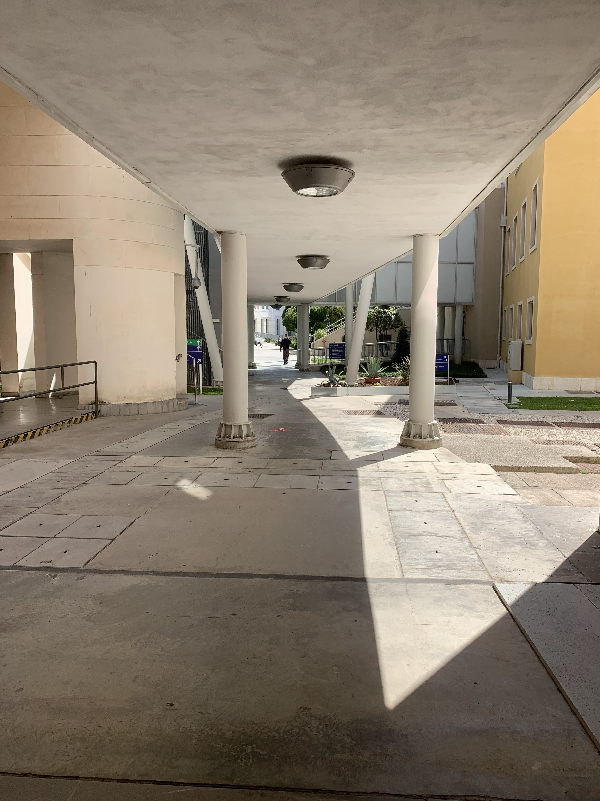

Caorle 1987

Immagini


Apri la raccolta originale (sito esterno)
Ricette collegate per gerarchia geografica

Baccalà mantecatoA Venezia ho lavorato per molti anni. Di immagini ne sono rimaste poche. Fegato alla venezianaI veneziani usano correggere il retrogusto amarognolo del fegato, aggiungendovi un ingrediente addolcente: le cipolle. Un'abitudine antichissima, se è vero che i romani lo preparavano 'ficatum", ossia con i fichi, da cui il nome stesso della frattaglia.
Fegato alla venezianaI veneziani usano correggere il retrogusto amarognolo del fegato, aggiungendovi un ingrediente addolcente: le cipolle. Un'abitudine antichissima, se è vero che i romani lo preparavano 'ficatum", ossia con i fichi, da cui il nome stesso della frattaglia. Gnocchetti sardi alla UrbawebQuesta non è una mia ricetta.
Gnocchetti sardi alla UrbawebQuesta non è una mia ricetta. Risi e bisiE' la più celebre tra le minestre veneziane. Il Doge era tenuto a mangiarla - seguendo un preciso cerimoniale - il giorno di San Marco, patrono di Venezia.
Risi e bisiE' la più celebre tra le minestre veneziane. Il Doge era tenuto a mangiarla - seguendo un preciso cerimoniale - il giorno di San Marco, patrono di Venezia.